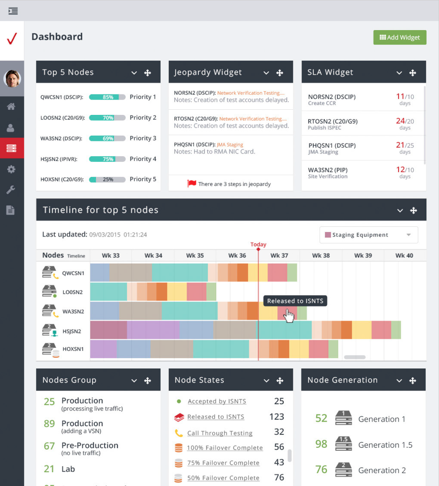
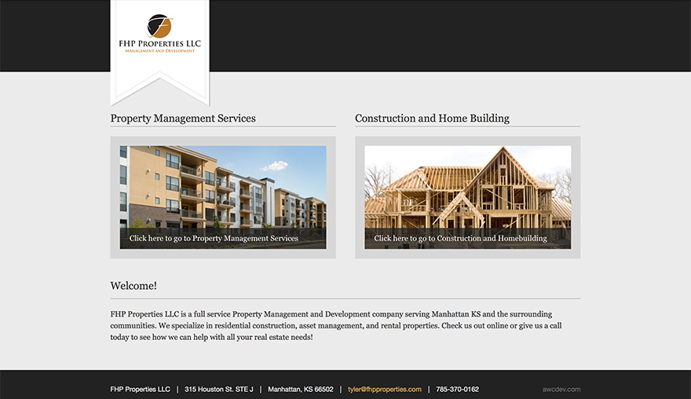
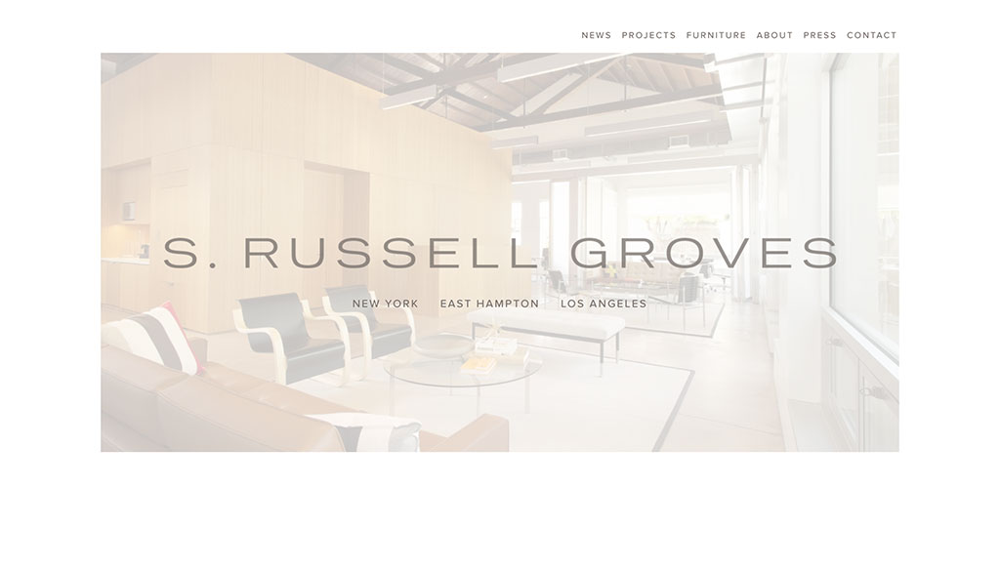
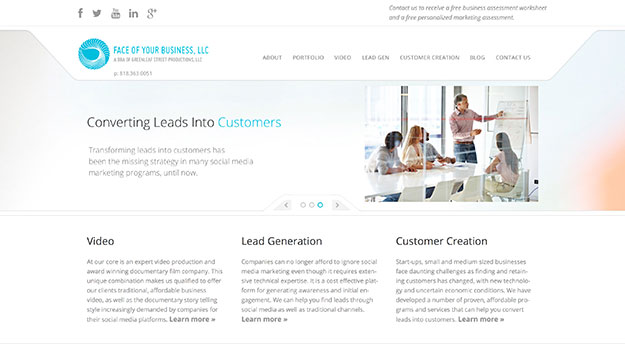
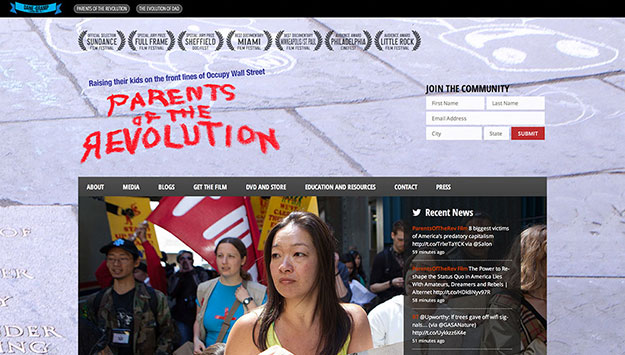
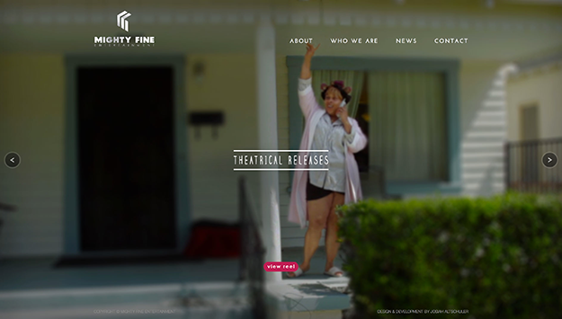
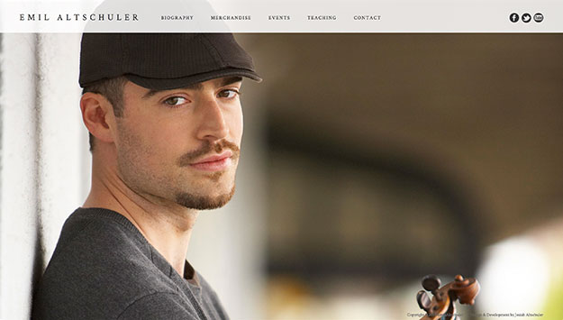
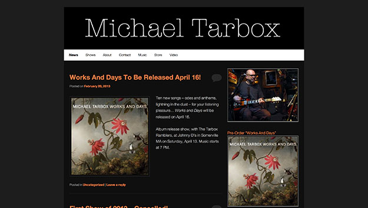
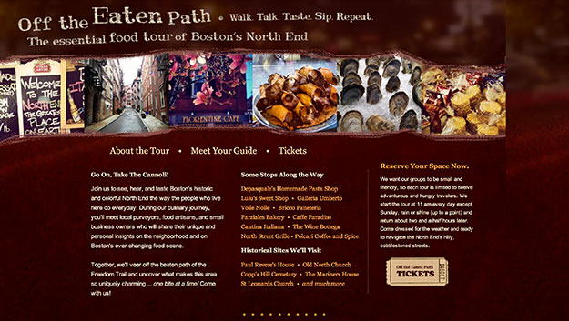
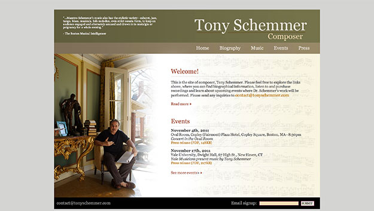

I am a full-stack web developer with over 10 years of experience in UI/UX, RESTful API's, database design and single page JavaScript applications. Feel free to review the work below and contact me at josiah.altschuler@gmail.com.
Josiah Altschuler
Web Development Portfolio & Blog
Consolidating Logistical Data to Increase Cost Savings, Verizon

Employer: JMA Information Technology, Inc.
Client: Verizon
Description: JMA IT, in partnership with Verizon, developed the Verizon VoIP Data Management Portal, a central repository for managing the logistical data related to Verizon’s VoIP services sites. The web application includes business rules for automatically generating Method of Procedures (MOPs) and configuration files, which can then be applied to infrastructure devices such as routers, firewalls and switches. It also validates data across multiple sites to eliminate data errors, such as conflicting information, invalid data and duplicate settings. The Verizon Portal provides additional benefits in that users can provision downstream systems, as well as audit production sites for differences between production and the Verizon Portal “database of record.” Customizable reports are available to allow users to query information from multiple sites for real-time analysis.
Benefits: The Verizon Portal has provided a 51% cost savings in Verizon resources and time and resulted in improvements in “time-to-market” for deploying new services and infrastructure enhancements. It also has allowed Verizon to retain vital business logic despite attrition.
Technologies used:
· Single-Page Application (SPA) architecture using the Angular JavaScript framework.
· Back-end RESTful API written in PHP.
· Continuous deployment to the new Verizon Cloud Platform (VCP), using Jenkins
Completed: N/A (Ongoing)
Racial Wealth Audit | Brandeis University
 Client: Brandeis University
Client: Brandeis University
Project: WordPress development.
Technologies used: PHP, JavaScript, CSS, HTML, WordPress
Completed: 5.25.17
Visit site: racialwealthaudit.org
Relational Coordination Research Collaborative, Brandeis University
 Client: Brandeis University
Client: Brandeis University
Project: WordPress plugin development for integration of RC Intervention Database and Outcomes & Predictors Database into RCRC website.
Technologies used: PHP, JavaScript, CSS, HTML, WordPress
Completed: 3.14.16
Visit site: rcrcconnect.org
FHP Properties, LLC

Client: FHP Properties, LLC
Project: WordPress design & and theme development.
Technologies used: PHP, JavaScript, CSS, HTML, WordPress, Photoshop
Completed: 2.2.16
Visit site: fhpproperties.com
Commodity Research Group
Client: A Streetcar Named Design
Project: WordPress theme development for blog section, and JSON API to display blog posts on static HTML front page. Design by A Streetcar Named Design.
Technologies used: PHP, JavaScript, CSS, HTML, WordPress, WordPress JSON API, Underscores
Completed: 12.31.15
Visit site: commodityresearchgroup.com
Clarafi
 Client: Digizyme
Client: Digizyme
Project: WordPress theme development using Underscores, and ongoing maintenance. Online subscriptions for video training using WooCommerce. Design by Digizyme
Technologies used: PHP, JavaScript, CSS, HTML, WordPress, WooCommerce, AWS
Ongoing: 9.1.15 - Present
Visit site: https://clarafi.com/
Forrester Research, Executive Summit
 Client: Forrester Research
Client: Forrester Research
Project: Front-end development - animations using Skrollr JavaScript framework. Design by Forrester Research
Technologies used: JavaScript, Skrollr.js, CSS, HTML
Completed: 8.19.15
Visit site: https://www.forrester.com/microsites/aoc/
S. Russell Groves

Client: Gianesini Design
Project: Developed WordPress theme using Underscores. Design by Gianesini Design
Technologies used: PHP, JavaScript/jQuery, CSS, HTML, WordPress, Underscores
Completed: 1.26.15
Visit site: srussellgroves.com
UCLA, PLATH LAB
 Client: Dr. Kathrin Plath, UCLA
Client: Dr. Kathrin Plath, UCLA
Project: Developed WordPress child theme.
Technologies used: PHP, JavaScript, CSS, HTML, WordPress
Completed: 1.20.15
Visit site: plathlab.com
FORRESTER RESEARCH, INTERACTIVE HOLIDAY CARD 2014
 Client: Forrester Research
Client: Forrester Research
Project: Interactive page with HTML5/jQuery. Design by Forrester Research.
Technologies used: JavaScript/jQuery, CSS, HTML
Completed: 12.3.14
Visit site: https://josiahaltschuler.github.io/forrester/holiday/2014/
UCSD, TOOR LAB
 Client: Dr. Navtej Toor, UCSD
Client: Dr. Navtej Toor, UCSD
Project: Designed and developed WordPress child theme.
3D molecular structure design: L2Molecule
Technologies used: PHP, JavaScript, CSS, HTML, WordPress
Completed: 9.24.14
Visit site: toorlab.org
FACE OF YOUR BUSINESS

Client: Greenleaf Street Productions, LLC
Project: Designed logo and developed WordPress theme. Used Sukces design template, by PureThemes.
Technologies used: PHP, JavaScript, CSS, HTML, WordPress
Completed: 2.2.14
Visit site: faceofyourbusiness.com
MASSACHUSETTS HEALTHY AGING COLLABORATIVE
 Client: John Snow, Inc.
Client: John Snow, Inc.
Project: Developed WordPress child theme. Includes forum and social network. Design by John Snow, Inc.
Technologies used: PHP, JavaScript, CSS, HTML, WordPress, BuddyPress, bbPress
Completed: 1.24.14
Visit site: mahealthyagingcollaborative.org
Featured in the Boston Globe on January 24th, 2014, "Study shows disparities in aging across state" and on March 18th, 2015, "Elder health report throws a few curves: Results may shape future strategies"
FORRESTER RESEARCH, INTERACTIVE HOLIDAY CARD 2013
 Client: Forrester Research
Client: Forrester Research
Project: Interactive page with HTML5/JavaScript. Design by Forrester Research.
Technologies used: JavaScript, HTML, CSS
Completed: 12.13.13
Visit site: Not available
PARENTS OF THE REVOLUTION

Client: Dane-Gramp Productions
Project: Designed and developed WordPress theme.
Technologies used: PHP, JavaScript, CSS, HTML, WordPress
Completed: 11.30.13
Visit site: parentsoftherevolution.com
INTERNATIONAL ASSOCIATION OF PUBLIC HEALTH LOGISTICIANS
 Client: John Snow, Inc.
Client: John Snow, Inc.
Project: Developed WordPress theme. Design by John Snow, Inc.
Technologies used: PHP, JavaScript, CSS, HTML, WordPress
Completed: 11.1.13
Visit site: iaphl.org
MIGHTY FINE ENTERTAINMENT

Client: Mighty Fine Entertainment
Project: Developed WordPress chlid theme. Design by Mighty Fine Entertainment.
Technologies used: PHP, JavaScript, CSS, HTML, WordPress
Completed: 5.17.13
Visit site: mightyfineentertainment.com
"Josiah was not only easy to work with and incredibly timely with his deliverables, but he created a far more superior website than any we could have imagined. My business partner and I were beyond impressed with his constant professionalism, even in the face of our sometimes unwieldy demands and expectations. We both whole-heartedly recommend Josiah for any design work you may need. His skill, talent and artistry will satisfy even the most demanding client."
– John Lavin, Mighty Fine Entertainment
TUFTS UNIVERSITY, COMPUTATIONAL BIOLOGY INITIATIVE
 Client: Tufts University
Client: Tufts University
Project: Design and development with WordPress. Animation done with HTML5/JavaScript. Logo design by L2Molecule
Technologies used: PHP, JavaScript, CSS, HTML, WordPress, Canvas
Completed: 1.15.13
Visit site: sites.tufts.edu/cbi
DIGIZYME, E.O. WILSON'S LIFE ON EARTH
 Client: Digizyme
Client: Digizyme
Project: HTML5/JavaScript animation and interactivity for widgets embedded in iBook.
Technologies used: JavaScript, HTML, CSS
Completed: 2.28.12
Visit site: iTunes
This iBook product was featured on WIRED, National Geographic, ReadWrite and an Apple television commercial.
EMIL ALTSCHULER

Client: Emil Altschuler, Violinist
Project: Design and development of WordPress Twenty Twelve child theme.
Technologies used: PHP, JavaScript, CSS, HTML, WordPress
Completed: 12.15.12
Visit site: emilaltschuler.com
MICHAEL TARBOX

Client: Michael Tarbox, Musician
Project: Design and Development of WordPress Twenty Eleven child theme.
Technologies used: PHP, JavaScript, CSS, HTML, WordPress
Completed: 12.1.12
Visit site: michaeltarbox.com
FORRESTER RESEARCH, INTERACTIVE HOLIDAY CARD 2012
 Client: Forrester Research
Client: Forrester Research
Project: Interactive page with HTML5/JavaScript. Design by Forrester Research.
Technologies used: JavaScript, HTML, CSS
Completed: 11.27.12
Visit site: https://josiahaltschuler.github.io/forrester/holiday/2012/
CICHLIDBASE
 Client: Hans Hofmann Lab, University of Texas at Austin
Client: Hans Hofmann Lab, University of Texas at Austin
Project: Design and development using CodeIgniter.
Technologies used: PHP, JavaScript, CSS, HTML, CodeIgniter
Completed: 9.18.12
Visit site: Site no longer active
MIT, COMPUTER-AIDED ENGINEERING FOR DNA ORIGAMI
 Client: Laboratory for Computational Biology & Biophysics, MIT
Client: Laboratory for Computational Biology & Biophysics, MIT
Project: Custom development using CodeIgniter. Design by Bitcyte.
Technologies used: PHP, JavaScript, CSS, HTML, CodeIgniter
Completed: 8.1.12
Visit site: cando-dna-origami.org
MIT, MSD BAYES
 Client: Laboratory for Computational Biology & Biophysics, MIT
Client: Laboratory for Computational Biology & Biophysics, MIT
Project: Custom development using PHP. Design by Digizyme.
Technologies used: PHP, JavaScript, CSS, HTML
Completed: 6.7.12
Visit site: msd-bayes.org
MIT, FCS BAYES
 Client: Laboratory for Computational Biology & Biophysics, MIT
Client: Laboratory for Computational Biology & Biophysics, MIT
Project: Custom development using PHP. Design by Digizyme.
Technologies used: PHP, JavaScript, CSS, HTML
Completed: 6.1.12
Visit site: fcs-bayes.org
OFF THE EATEN PATH TOURS

Client: A Streetcar Named Design
Project: Custom CMS built with CodeIgniter framework. Integration with Bookeo API. Design by A Streetcar Named Design.
Technologies used: PHP, JavaScript, CSS, HTML, CodeIgniter
Completed: 6.1.12
Visit site: offtheeatenpathtours.com
MOLECULAR MOVIES
 Client: Digizyme
Client: Digizyme
Project: Developed using CakePHP framework. Design by Digizyme.
Technologies used: PHP, JavaScript, CSS, HTML, CakePHP
Completed: 2.1.12
Visit site: molecularmovies.com
TONY SCHEMMER

Client: Tony Schemmer, Composer
Project: Design and development with CakePHP
Technologies used: PHP, JavaScript, CSS, HTML, CakePHP
Completed: 11.1.11
Visit site: tonyschemmer.com
ATWOOD'S TAVERN
 Client: Atwood’s Tavern
Client: Atwood’s Tavern
Project: Designed site and developed custom Content Management System with CakePHP
Technologies used: PHP, JavaScript, CSS, HTML, CakePHP
Completed: 8.31.11
Visit site: atwoodstavern.com
CONFORMATIONAL DYNAMICS DATA BANK
 Client: Laboratory for Computational Biology & Biophysics, MIT
Client: Laboratory for Computational Biology & Biophysics, MIT
Project: Custom development with PHP. Automated scheduled merging of data from the Electron Microscopy Data Bank (EMDB) with MySQL database. Design by Digizyme.
Technologies used: PHP, JavaScript, CSS, HTML
Completed: 10.28.10
Visit site: Site no longer active